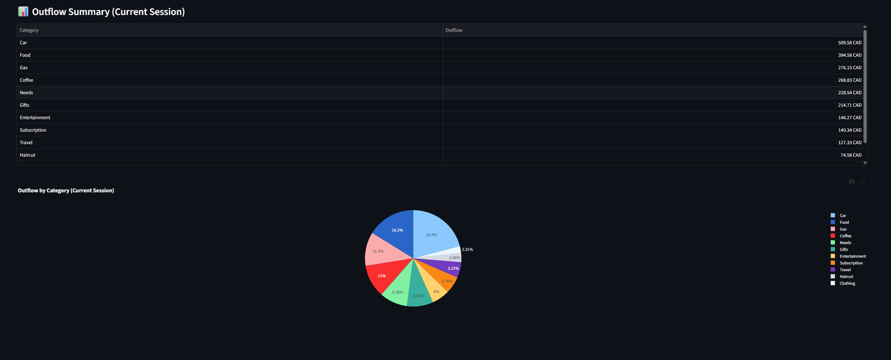
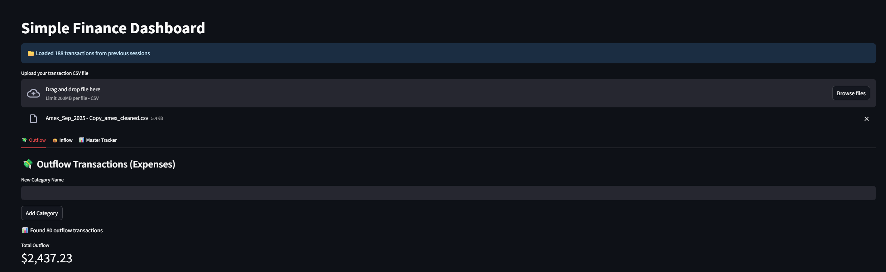
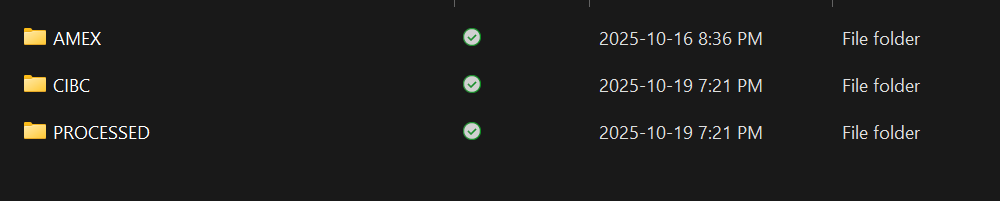
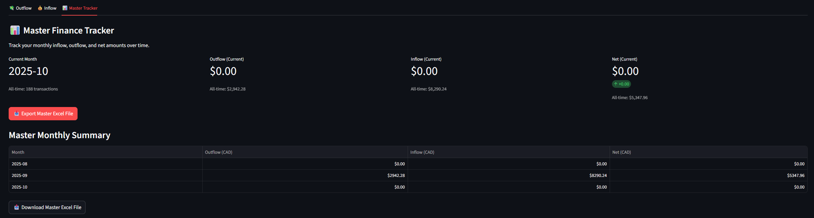

Finance app, v1
The first version of my finance tool: statement files in, categorized spending out.

Project Overview
The Finance App is a comprehensive personal finance management system designed to automate bank statement processing, categorize transactions, and provide detailed financial analytics. The application consists of three main components: automated file watchers for bank statement processing, a Streamlit-based web dashboard for transaction management, and data persistence capabilities.
Project Goals
- Automate processing - Eliminate manual data entry by automatically processing bank statements
- Smart categorization - Automatically categorize transactions based on merchant keywords with 95%+ accuracy
- Excel-like editing - Provide familiar spreadsheet editing interface for transaction management
- Comprehensive analytics - Generate detailed monthly summaries with visual charts and expense breakdowns
- Multi-account support - Process transactions from multiple bank accounts (CIBC, AMEX)
Key Features
- Automated File Processing - Real-time monitoring of bank statement folders with automatic CSV/XLS conversion
- Transaction Management - Upload, edit, categorize, and delete transactions with inline editing
- Financial Analytics - Interactive charts showing expense breakdown by category and monthly trends
- Smart Categorization - Automatic transaction categorization using keyword matching
- Export Capabilities - Generate comprehensive Excel reports with formatted sheets and charts
- Data Persistence - Master database storing all historical transactions with automatic backup

Technical Architecture
The Finance App is built using a modern Python-based stack with Streamlit for the web interface. The system uses file watchers to monitor bank statement folders, automatically processing new CSV and XLS files. The backend leverages pandas for data manipulation, Plotly for interactive visualizations, and JSON for persistent data storage.
- Frontend: Streamlit web framework for interactive dashboard
- Backend: Python with pandas for data processing
- File Processing: xlwings for Excel files, watchdog for file monitoring
- Visualization: Plotly for interactive charts and graphs
- Storage: JSON-based persistent data storage
Automated Bank Statement Processing
The app features intelligent file watchers that monitor designated folders for new bank statements. When a new CIBC CSV or AMEX XLS file is detected, the system automatically processes it, cleans the data, standardizes formats, and saves the processed file to the appropriate output folder. This eliminates the need for manual file handling and ensures consistent data structure across all imported transactions.

Smart Categorization System
The application uses intelligent keyword-based categorization to automatically assign transactions to predefined categories. The system learns from user corrections and builds a mapping of merchant names to categories, improving accuracy over time. Users can add, edit, and manage custom categories to match their financial tracking needs.
Performance Metrics
- Processing Accuracy: 95%+ correct transaction categorization
- Processing Speed: < 30 seconds for 1000+ transactions
- Data Integrity: Zero data loss during processing
- Response Time: < 3 seconds for dashboard interactions
- Time to Insight: < 2 minutes from file upload to summary view

Technologies Used
- Python 3.8+
- Streamlit - Web application framework
- Pandas - Data manipulation and analysis
- xlwings - Excel file processing
- watchdog - File system monitoring
- Plotly - Interactive data visualization
- JSON - Data persistence